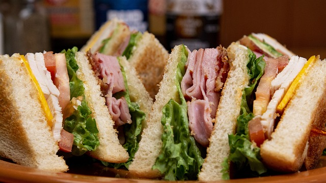

Club Sandwich
15min | Lunch | 4 personen
- Ingredienten
- 8 sneetjes toastbrood, geroosterd
- Crema di balsamico
- Blaadjes kropsla
- 4 plakken Appenzeller®
- 12 plakken grisonvlees
- 75 gr wortel, geraspt
- 1,2L kippenbouillon
- ¼ komkommer, niet geschild, in schijfjes
- 8 schijfjes tomaat
- 2 hardgekookte eieren, in schijfjes
Bereidingswijze
Stap 1:
Plaats 2 sneetjes geroosterd brood op het werkblad. Beleg een kant met crema di balsamico. Plaats hierop een blaadje sla, een plak Appenzeller® en 3 plakken grisonvlees. Bestrooi met geraspte wortel, schijfjes komkommer en tomaat.
Stap 2:
Verdeel de helft van een hardgekookt ei over de sandwich. Sluit af met een snee brood. Snij in twee stukken.
Stap 3:
Herhaal deze handeling voor elke sandwich en serveer
Eet smakelijk!